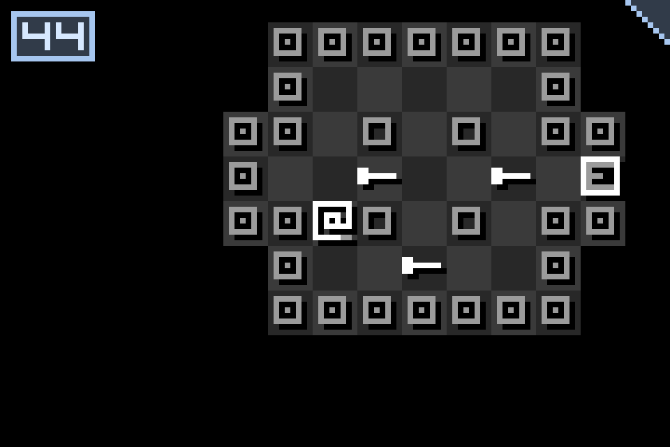
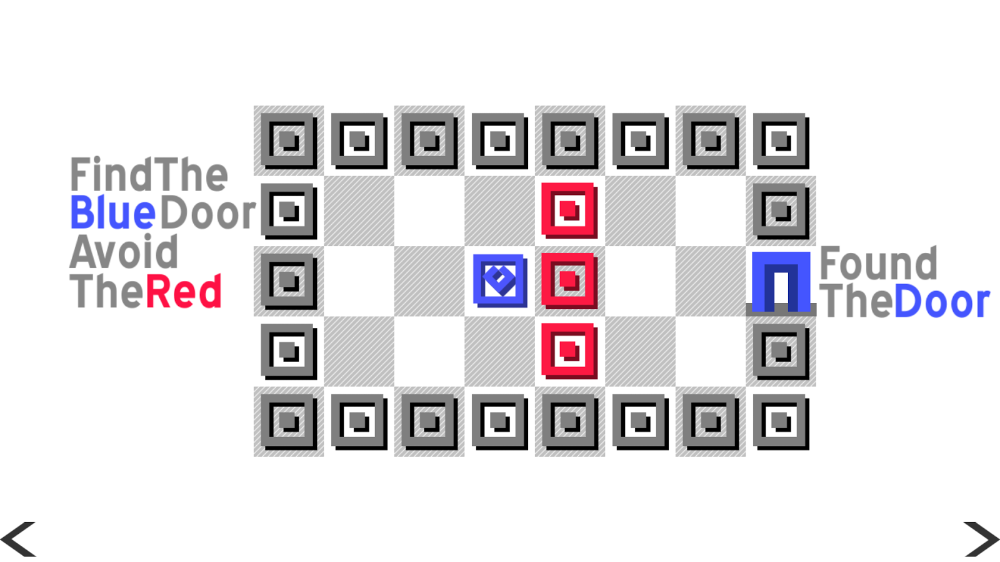
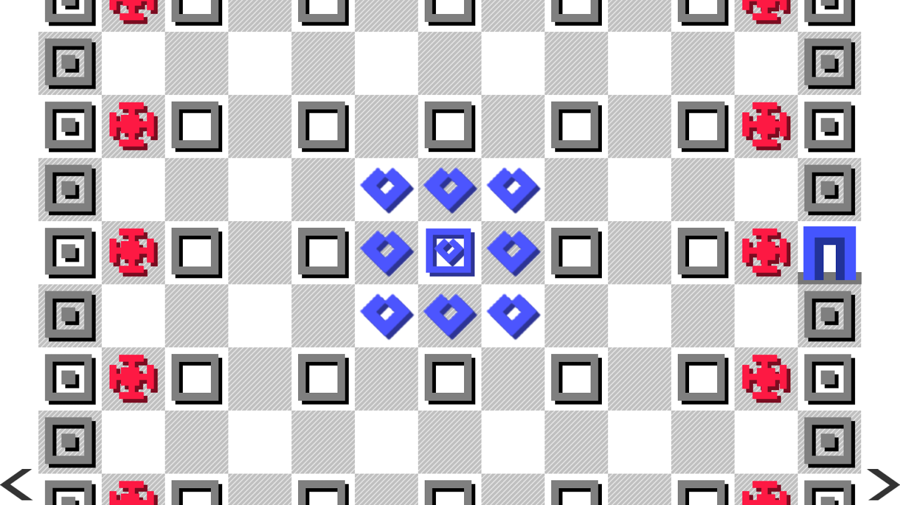
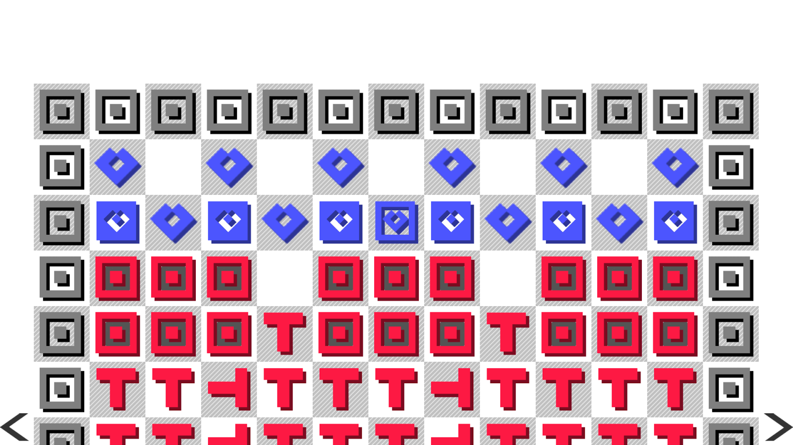
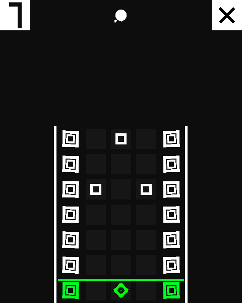
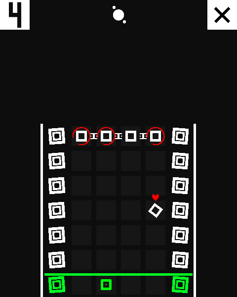
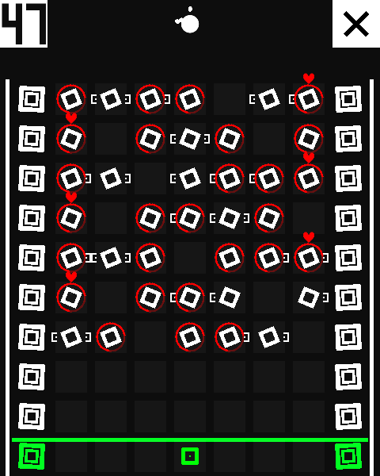
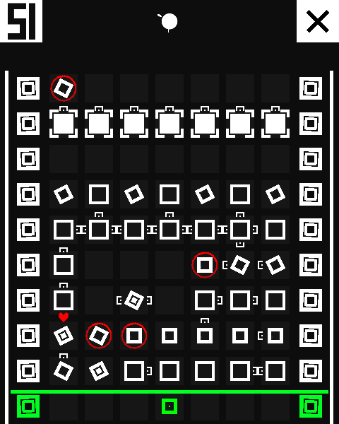
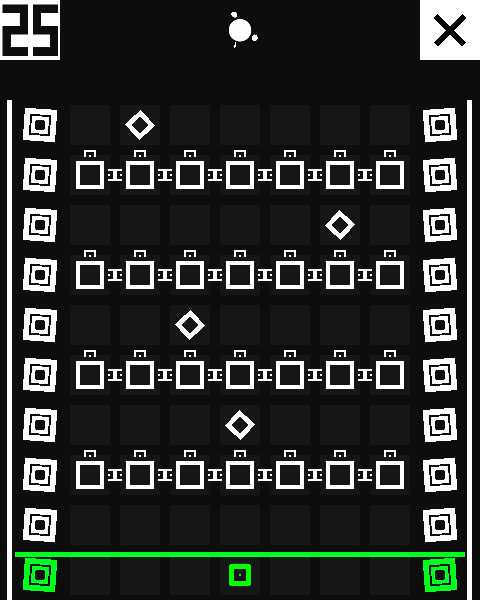
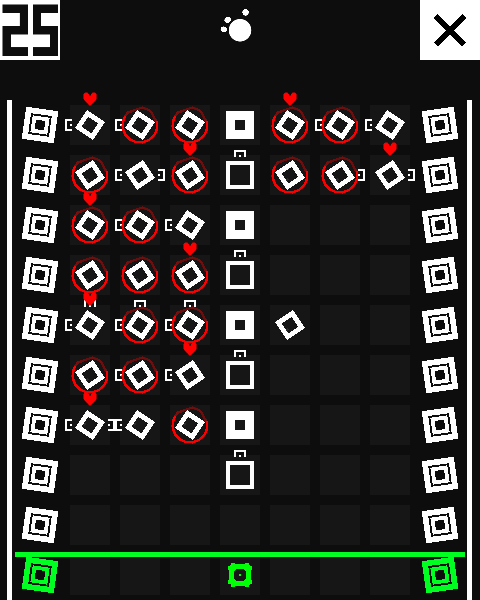

Two Puzzle Games For PC And Mobile
PC and mobile link for the first game
PC and mobile link for the second game
FIRST GAME
First game is a reskined version of original game called "Ending". I was so addicted to it I decided to create exact copy of it but with more color. Left is the original game. Right is my take on the look of the game.
 Below are pictures for more examples.
 Working on creating copy of my favorite game was very fun. Creating exact same enemy AI behaviour was the most challenging aspect of the project.
I have used Unity for the projects. I have learend how to port game onto different platforms. Challenge was adjusting to different input, controller system, and resolution settings depending on the platform.
I have used Unity for the projects. I have learend how to port game onto different platforms. Challenge was adjusting to different input, controller system, and resolution settings depending on the platform.
SECOND GAME
I took the concept of turn based action puzzle then combined it with galaxy like gameplay style.
 Game presented seemingly open ended puzzle but at heart it required the player to figoure out exact combination of movement in order to beat the level.
However somehow the game felt like lacking the depth I have experienced from the first original game.
   